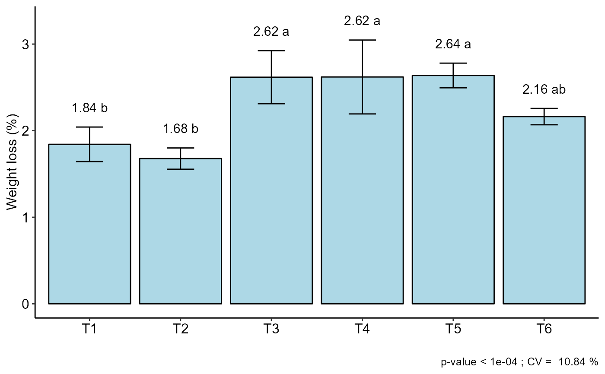
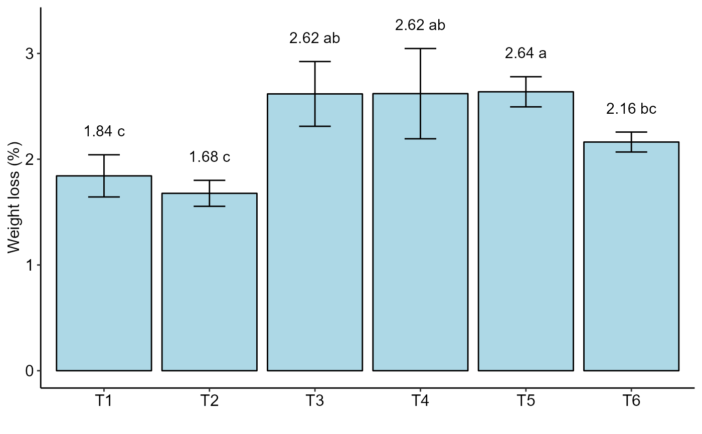
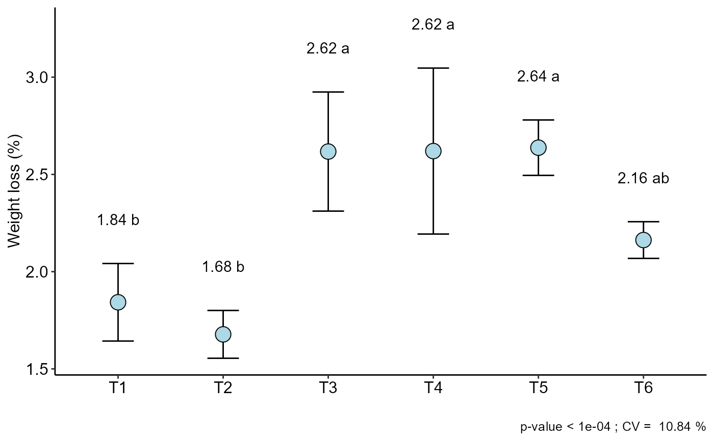
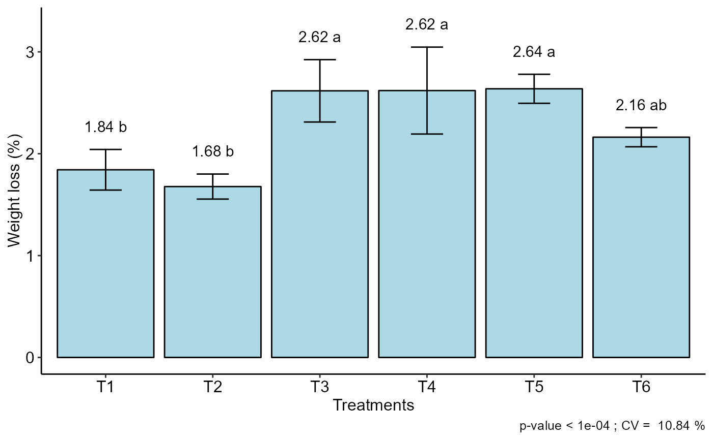
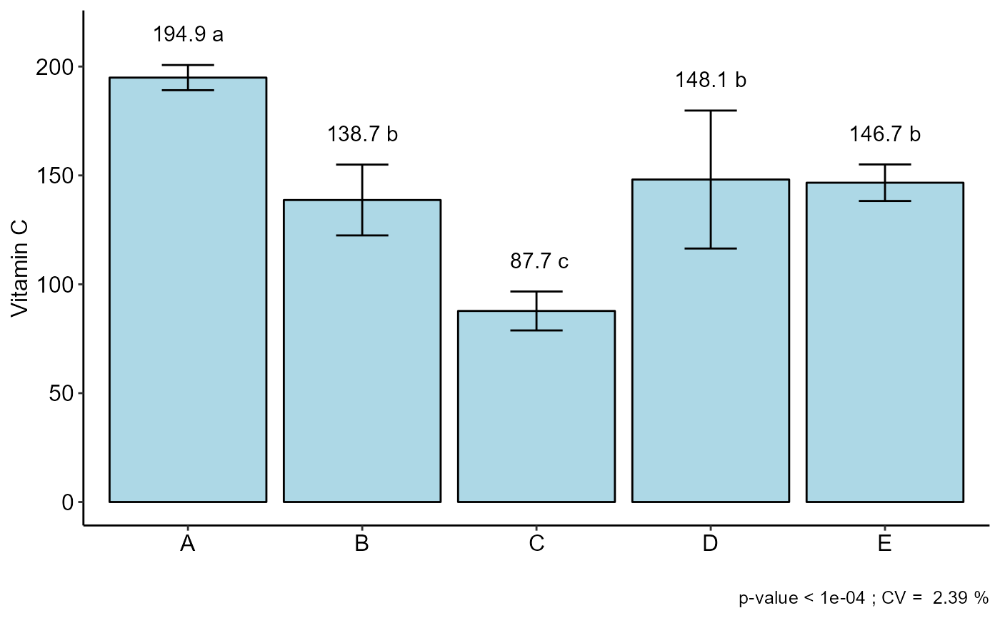

Analysis: Completely randomized design
DIC.RdStatistical analysis of experiments conducted in a completely randomized and balanced design with a factor considering the fixed model.
DIC( trat, response, norm = "sw", homog = "bt", mcomp = "tukey", quali = TRUE, alpha.f = 0.05, alpha.t = 0.05, grau = 1, transf = 1, test = "parametric", p.adj = "holm", geom = "bar", theme = theme_classic(), sup = NA, CV = TRUE, ylab = "Response", xlab = "", fill = "lightblue", angle = 0, family = "sans", textsize = 12, dec = 3, addmean = TRUE, errorbar = TRUE, posi = "top", point = "mean_sd", angle.label = 0 )
Arguments
| trat | Numerical or complex vector with treatments |
|---|---|
| response | Numerical vector containing the response of the experiment. |
| norm | Error normality test (default is Shapiro-Wilk) |
| homog | Homogeneity test of variances (default is Bartlett) |
| mcomp | Multiple comparison test (Tukey (default), LSD, Scott-Knott and Duncan) |
| quali | Defines whether the factor is quantitative or qualitative (default is qualitative) |
| alpha.f | Level of significance of the F test (default is 0.05) |
| alpha.t | Significance level of the multiple comparison test (default is 0.05) |
| grau | Degree of polynomial in case of quantitative factor (default is 1) |
| transf | Applies data transformation (default is 1; for log consider 0) |
| test | "parametric" - Parametric test or "noparametric" - non-parametric test |
| p.adj | Method for adjusting p values for Kruskal-Wallis ("none","holm","hommel", "hochberg", "bonferroni", "BH", "BY", "fdr") |
| geom | Graph type (columns, boxes or segments) |
| theme | ggplot2 theme (default is theme_classic()) |
| sup | Number of units above the standard deviation or average bar on the graph |
| CV | Plotting the coefficient of variation and p-value of Anova (default is TRUE) |
| ylab | Variable response name (Accepts the expression() function) |
| xlab | Treatments name (Accepts the expression() function) |
| fill | Defines chart color (to generate different colors for different treatments, define fill = "trat") |
| angle | x-axis scale text rotation |
| family | Font family |
| textsize | Font size |
| dec | Number of cells |
| addmean | Plot the average value on the graph (default is TRUE) |
| errorbar | Plot the standard deviation bar on the graph (In the case of a segment and column graph) - default is TRUE |
| posi | Legend position |
| point | Defines whether to plot mean ("mean"), mean with standard deviation ("mean_sd" - default) or mean with standard error (default - "mean_se"). Only for quali=F. |
| angle.label | label angle |
Value
The table of analysis of variance, the test of normality of errors (Shapiro-Wilk, Lilliefors, Anderson-Darling, Cramer-von Mises, Pearson and Shapiro-Francia), the test of homogeneity of variances (Bartlett or Levene), the test of independence of Durbin-Watson errors, the test of multiple comparisons (Tukey, LSD, Scott-Knott or Duncan) or adjustment of regression models up to grade 3 polynomial, in the case of quantitative treatments. Non-parametric analysis can be used by the Kruskal-Wallis test. The column, segment or box chart for qualitative treatments is also returned. The function also returns a standardized residual plot.
Note
The ordering of the graph is according to the sequence in which the factor levels are arranged in the data sheet. The bars of the column and segment graphs are standard deviation.
Post hoc test in nonparametric is using the criterium Fisher's least significant difference (p-adj="holm").
CV and p-value of the graph indicate coefficient of variation and p-value of the F test of the analysis of variance.
In the final output when transformation (transf argument) is different from 1, the columns resp and respo in the mean test are returned, indicating transformed and non-transformed mean, respectively.
References
Principles and procedures of statistics a biometrical approach Steel, Torry and Dickey. Third Edition 1997
Multiple comparisons theory and methods. Departament of statistics the Ohio State University. USA, 1996. Jason C. Hsu. Chapman Hall/CRC.
W.J. Conover, Practical Nonparametrics Statistics. 1999
Ramalho M.A.P., Ferreira D.F., Oliveira A.C. 2000. Experimentacao em Genetica e Melhoramento de Plantas. Editora UFLA.
Scott R.J., Knott M. 1974. A cluster analysis method for grouping mans in the analysis of variance. Biometrics, 30, 507-512.
Mendiburu, F., and de Mendiburu, M. F. (2019). Package ‘agricolae’. R Package, Version, 1-2.
See also
Author
Gabriel Danilo Shimizu, shimizu@uel.br
Leandro Simoes Azeredo Goncalves
Rodrigo Yudi Palhaci Marubayashi
Examples
#> #> #>#> #> #>#> #> #>#> #> #>#> #> #>#> #> #>#> #> #>#> #> #>#> #> #>DIC(trat, WL) # tukey#> #> ----------------------------------------------------------------- #> Normality of errors #> ----------------------------------------------------------------- #> Method Statistic p.value #> Shapiro-Wilk normality test(W) 0.9448293 0.2087967 #>#> As the calculated p-value is greater than the 5% significance level, hypothesis H0 is not rejected. Therefore, errors can be considered normal#> #> ----------------------------------------------------------------- #> Homogeneity of Variances #> ----------------------------------------------------------------- #> Method Statistic p.value #> Bartlett test(Bartlett's K-squared) 8.568274 0.1275737 #>#> As the calculated p-value is greater than the 5% significance level,hypothesis H0 is not rejected. Therefore, the variances can be considered homogeneous#> #> ----------------------------------------------------------------- #> Independence from errors #> ----------------------------------------------------------------- #> Method Statistic p.value #> Durbin-Watson test(DW) 2.104821 0.1924474 #>#> As the calculated p-value is greater than the 5% significance level, hypothesis H0 is not rejected. Therefore, errors can be considered independent#> #> ----------------------------------------------------------------- #> Additional Information #> ----------------------------------------------------------------- #> #> CV (%) = 10.84 #> R-squared = 0.92 #> Mean = 2.2596 #> Median = 2.225 #> Possible outliers = No discrepant point #> #> ----------------------------------------------------------------- #> Analysis of Variance #> ----------------------------------------------------------------- #> Df Sum Sq Mean.Sq F value Pr(F) #> trat 5 3.692121 0.73842417 12.31191 2.723541e-05 #> Residuals 18 1.079575 0.05997639 #> #>#> As the calculated p-value, it is less than the 5% significance level.The hypothesis H0 of equality of means is rejected. Therefore, at least two treatments differ#> #> #> ----------------------------------------------------------------- #> Multiple Comparison Test #> ----------------------------------------------------------------- #> resp groups #> T5 2.6375 a #> T4 2.6200 a #> T3 2.6175 a #> T6 2.1625 ab #> T1 1.8425 b #> T2 1.6775 b #>#>DIC(trat, WL, mcomp = "sk")#> #> ----------------------------------------------------------------- #> Normality of errors #> ----------------------------------------------------------------- #> Method Statistic p.value #> Shapiro-Wilk normality test(W) 0.9448293 0.2087967 #>#> As the calculated p-value is greater than the 5% significance level, hypothesis H0 is not rejected. Therefore, errors can be considered normal#> #> ----------------------------------------------------------------- #> Homogeneity of Variances #> ----------------------------------------------------------------- #> Method Statistic p.value #> Bartlett test(Bartlett's K-squared) 8.568274 0.1275737 #>#> As the calculated p-value is greater than the 5% significance level,hypothesis H0 is not rejected. Therefore, the variances can be considered homogeneous#> #> ----------------------------------------------------------------- #> Independence from errors #> ----------------------------------------------------------------- #> Method Statistic p.value #> Durbin-Watson test(DW) 2.104821 0.1924474 #>#> As the calculated p-value is greater than the 5% significance level, hypothesis H0 is not rejected. Therefore, errors can be considered independent#> #> ----------------------------------------------------------------- #> Additional Information #> ----------------------------------------------------------------- #> #> CV (%) = 10.84 #> R-squared = 0.92 #> Mean = 2.2596 #> Median = 2.225 #> Possible outliers = No discrepant point #> #> ----------------------------------------------------------------- #> Analysis of Variance #> ----------------------------------------------------------------- #> Df Sum Sq Mean.Sq F value Pr(F) #> trat 5 3.692121 0.73842417 12.31191 2.723541e-05 #> Residuals 18 1.079575 0.05997639 #> #>#> As the calculated p-value, it is less than the 5% significance level.The hypothesis H0 of equality of means is rejected. Therefore, at least two treatments differ#> #> #> ----------------------------------------------------------------- #> Multiple Comparison Test #> ----------------------------------------------------------------- #> resp groups #> T5 2.6375 a #> T4 2.6200 a #> T3 2.6175 a #> T6 2.1625 b #> T1 1.8425 c #> T2 1.6775 c #>#>DIC(trat, WL, mcomp = "duncan")#> #> ----------------------------------------------------------------- #> Normality of errors #> ----------------------------------------------------------------- #> Method Statistic p.value #> Shapiro-Wilk normality test(W) 0.9448293 0.2087967 #>#> As the calculated p-value is greater than the 5% significance level, hypothesis H0 is not rejected. Therefore, errors can be considered normal#> #> ----------------------------------------------------------------- #> Homogeneity of Variances #> ----------------------------------------------------------------- #> Method Statistic p.value #> Bartlett test(Bartlett's K-squared) 8.568274 0.1275737 #>#> As the calculated p-value is greater than the 5% significance level,hypothesis H0 is not rejected. Therefore, the variances can be considered homogeneous#> #> ----------------------------------------------------------------- #> Independence from errors #> ----------------------------------------------------------------- #> Method Statistic p.value #> Durbin-Watson test(DW) 2.104821 0.1924474 #>#> As the calculated p-value is greater than the 5% significance level, hypothesis H0 is not rejected. Therefore, errors can be considered independent#> #> ----------------------------------------------------------------- #> Additional Information #> ----------------------------------------------------------------- #> #> CV (%) = 10.84 #> R-squared = 0.92 #> Mean = 2.2596 #> Median = 2.225 #> Possible outliers = No discrepant point #> #> ----------------------------------------------------------------- #> Analysis of Variance #> ----------------------------------------------------------------- #> Df Sum Sq Mean.Sq F value Pr(F) #> trat 5 3.692121 0.73842417 12.31191 2.723541e-05 #> Residuals 18 1.079575 0.05997639 #> #>#> As the calculated p-value, it is less than the 5% significance level.The hypothesis H0 of equality of means is rejected. Therefore, at least two treatments differ#> #> #> ----------------------------------------------------------------- #> Multiple Comparison Test #> ----------------------------------------------------------------- #> resp groups #> T5 2.6375 a #> T4 2.6200 a #> T3 2.6175 a #> T6 2.1625 b #> T1 1.8425 bc #> T2 1.6775 c #>#>#============================= # Kruskal-Wallis #============================= DIC(trat, WL, test = "noparametric")#> #> #> ----------------------------------------------------------------- #> Statistics #> ----------------------------------------------------------------- #> Chisq p.chisq #> 18.75631 0.002133687 #> #> #> ----------------------------------------------------------------- #> Parameters #> ----------------------------------------------------------------- #> test p.ajusted name.t ntr alpha #> Kruskal-Wallis holm trat 6 0.05 #> #> #> ----------------------------------------------------------------- #> Multiple Comparison Test #> ----------------------------------------------------------------- #> Mean SD Rank Groups #> T1 1.8425 0.19939492 5.75 c #> T2 1.6775 0.12284814 3.50 c #> T3 2.6175 0.30619983 18.25 ab #> T4 2.6200 0.42669271 17.25 ab #> T5 2.6375 0.14244882 19.50 a #> T6 2.1625 0.09429563 10.75 bc#============================= # chart type #============================= DIC(trat, WL, geom="point")#> #> ----------------------------------------------------------------- #> Normality of errors #> ----------------------------------------------------------------- #> Method Statistic p.value #> Shapiro-Wilk normality test(W) 0.9448293 0.2087967 #>#> As the calculated p-value is greater than the 5% significance level, hypothesis H0 is not rejected. Therefore, errors can be considered normal#> #> ----------------------------------------------------------------- #> Homogeneity of Variances #> ----------------------------------------------------------------- #> Method Statistic p.value #> Bartlett test(Bartlett's K-squared) 8.568274 0.1275737 #>#> As the calculated p-value is greater than the 5% significance level,hypothesis H0 is not rejected. Therefore, the variances can be considered homogeneous#> #> ----------------------------------------------------------------- #> Independence from errors #> ----------------------------------------------------------------- #> Method Statistic p.value #> Durbin-Watson test(DW) 2.104821 0.1924474 #>#> As the calculated p-value is greater than the 5% significance level, hypothesis H0 is not rejected. Therefore, errors can be considered independent#> #> ----------------------------------------------------------------- #> Additional Information #> ----------------------------------------------------------------- #> #> CV (%) = 10.84 #> R-squared = 0.92 #> Mean = 2.2596 #> Median = 2.225 #> Possible outliers = No discrepant point #> #> ----------------------------------------------------------------- #> Analysis of Variance #> ----------------------------------------------------------------- #> Df Sum Sq Mean.Sq F value Pr(F) #> trat 5 3.692121 0.73842417 12.31191 2.723541e-05 #> Residuals 18 1.079575 0.05997639 #> #>#> As the calculated p-value, it is less than the 5% significance level.The hypothesis H0 of equality of means is rejected. Therefore, at least two treatments differ#> #> #> ----------------------------------------------------------------- #> Multiple Comparison Test #> ----------------------------------------------------------------- #> resp groups #> T5 2.6375 a #> T4 2.6200 a #> T3 2.6175 a #> T6 2.1625 ab #> T1 1.8425 b #> T2 1.6775 b #>#>DIC(trat, WL, ylab = "Weight loss (%)", xlab="Treatments")#> #> ----------------------------------------------------------------- #> Normality of errors #> ----------------------------------------------------------------- #> Method Statistic p.value #> Shapiro-Wilk normality test(W) 0.9448293 0.2087967 #>#> As the calculated p-value is greater than the 5% significance level, hypothesis H0 is not rejected. Therefore, errors can be considered normal#> #> ----------------------------------------------------------------- #> Homogeneity of Variances #> ----------------------------------------------------------------- #> Method Statistic p.value #> Bartlett test(Bartlett's K-squared) 8.568274 0.1275737 #>#> As the calculated p-value is greater than the 5% significance level,hypothesis H0 is not rejected. Therefore, the variances can be considered homogeneous#> #> ----------------------------------------------------------------- #> Independence from errors #> ----------------------------------------------------------------- #> Method Statistic p.value #> Durbin-Watson test(DW) 2.104821 0.1924474 #>#> As the calculated p-value is greater than the 5% significance level, hypothesis H0 is not rejected. Therefore, errors can be considered independent#> #> ----------------------------------------------------------------- #> Additional Information #> ----------------------------------------------------------------- #> #> CV (%) = 10.84 #> R-squared = 0.92 #> Mean = 2.2596 #> Median = 2.225 #> Possible outliers = No discrepant point #> #> ----------------------------------------------------------------- #> Analysis of Variance #> ----------------------------------------------------------------- #> Df Sum Sq Mean.Sq F value Pr(F) #> trat 5 3.692121 0.73842417 12.31191 2.723541e-05 #> Residuals 18 1.079575 0.05997639 #> #>#> As the calculated p-value, it is less than the 5% significance level.The hypothesis H0 of equality of means is rejected. Therefore, at least two treatments differ#> #> #> ----------------------------------------------------------------- #> Multiple Comparison Test #> ----------------------------------------------------------------- #> resp groups #> T5 2.6375 a #> T4 2.6200 a #> T3 2.6175 a #> T6 2.1625 ab #> T1 1.8425 b #> T2 1.6775 b #>#>#============================= # quantitative factor #============================= data("phao") attach(phao) DIC(dose,comp,quali=FALSE,grau=2)#> #> ----------------------------------------------------------------- #> Normality of errors #> ----------------------------------------------------------------- #> Method Statistic p.value #> Shapiro-Wilk normality test(W) 0.9647717 0.5174008 #>#> As the calculated p-value is greater than the 5% significance level, hypothesis H0 is not rejected. Therefore, errors can be considered normal#> #> ----------------------------------------------------------------- #> Homogeneity of Variances #> ----------------------------------------------------------------- #> Method Statistic p.value #> Bartlett test(Bartlett's K-squared) 4.428915 0.3510598 #>#> As the calculated p-value is greater than the 5% significance level,hypothesis H0 is not rejected. Therefore, the variances can be considered homogeneous#> #> ----------------------------------------------------------------- #> Independence from errors #> ----------------------------------------------------------------- #> Method Statistic p.value #> Durbin-Watson test(DW) 1.801827 0.08064338 #>#> As the calculated p-value is greater than the 5% significance level, hypothesis H0 is not rejected. Therefore, errors can be considered independent#> #> ----------------------------------------------------------------- #> Additional Information #> ----------------------------------------------------------------- #> #> CV (%) = 11.71 #> R-squared = 0.93 #> Mean = 14.436 #> Median = 15.3 #> Possible outliers = No discrepant point #> #> ----------------------------------------------------------------- #> Analysis of Variance #> ----------------------------------------------------------------- #> Df Sum Sq Mean.Sq F value Pr(F) #> trat 4 145.8096 36.4524 12.76166 2.557884e-05 #> Residuals 20 57.1280 2.8564 #> #>#> As the calculated p-value, it is less than the 5% significance level.The hypothesis H0 of equality of means is rejected. Therefore, at least two treatments differ#> #> #> ----------------------------------------------------------------- #> Regression #> ----------------------------------------------------------------- #>#> Estimate Std. Error t value Pr(>|t|) #> (Intercept) 10.2097143 0.68981140 14.800733 6.427099e-13 #> trat 2.8822857 0.40856781 7.054608 4.456995e-07 #> I(trat^2) -0.3042857 0.04897332 -6.213296 2.971498e-06 #> #> ---------------------------------------------------- #> Deviations from regression #> ---------------------------------------------------- #> GL SQ F p-value #> 2 1.968229 0.3445296 0.7126767#============================= # data transformation #============================= data("pepper") attach(pepper) DIC(Acesso, VitC, transf = 0)#> #> ----------------------------------------------------------------- #> Normality of errors #> ----------------------------------------------------------------- #> Method Statistic p.value #> Shapiro-Wilk normality test(W) 0.9568114 0.4822784 #>#> As the calculated p-value is greater than the 5% significance level, hypothesis H0 is not rejected. Therefore, errors can be considered normal#> #> ----------------------------------------------------------------- #> Homogeneity of Variances #> ----------------------------------------------------------------- #> Method Statistic p.value #> Bartlett test(Bartlett's K-squared) 9.166029 0.05708089 #>#> As the calculated p-value is greater than the 5% significance level,hypothesis H0 is not rejected. Therefore, the variances can be considered homogeneous#> #> ----------------------------------------------------------------- #> Independence from errors #> ----------------------------------------------------------------- #> Method Statistic p.value #> Durbin-Watson test(DW) 2.415765 0.5054283 #>#> As the calculated p-value is greater than the 5% significance level, hypothesis H0 is not rejected. Therefore, errors can be considered independent#> #> ----------------------------------------------------------------- #> Additional Information #> ----------------------------------------------------------------- #> #> CV (%) = 2.39 #> R-squared = 0.96 #> Mean = 143.223 #> Median = 140.615 #> Possible outliers = No discrepant point #> #> ----------------------------------------------------------------- #> Analysis of Variance #> ----------------------------------------------------------------- #> Df Sum Sq Mean.Sq F value Pr(F) #> trat 4 1.3360870 0.33402175 23.98432 2.274302e-06 #> Residuals 15 0.2089001 0.01392667 #> #>#> As the calculated p-value, it is less than the 5% significance level.The hypothesis H0 of equality of means is rejected. Therefore, at least two treatments differ#> #> #> ----------------------------------------------------------------- #> Multiple Comparison Test #> ----------------------------------------------------------------- #> resp groups respO #> A 5.272221 a 194.9125 #> E 4.986831 b 146.6500 #> D 4.981784 b 148.1050 #> B 4.927180 b 138.7000 #> C 4.470638 c 87.7475 #>#> #> #>